Blog
Archiv mit 210 Artikeln von 2011 bis 2023

Regeln für KI im Office
ChatGPT & Co haben sich schnell in die Herzen und Alltag von vielen Menschen im Berufs- und Privatleben gespielt. Diese neuen Werkzeuge eröffnen uns viele Chancen, nicht nur effizienter zu werden, sondern auch kreativer. Aber …

KI als Copilot für die Assistenz
KI in Form von ChatGPT & Co sind hervorragende neue Werkzeuge im Office-Alltag, um produktiver und ja, auch kreativer, zu werden. Neugier statt Angst ist angezeigt im Umgang mit diesen Werkzeugen, die wie andere Werkzeuge auch …

Digitale Tools für Zusammenarbeit im Office
E-Mail, Digitale Ablage und eine Branchensoftware sind schon lange nicht mehr genug für effiziente Zusammenarbeit. Doch bevor Sie sich in einem Dschungel an digitalen Werkzeugen verlieren, sollten Sie sich über die Systematik …

Veränderung braucht Gewohnheit
Sowohl im Berufs-als auch im Privatleben sind wir ständig im Veränderungsmodus. Manche Veränderungen wollen wir umsetzen, manche müssen wir mitmachen. Wir alles wissen, dass Veränderung nie leicht sind und je länger wir etwas auf …
Erfolgszutat Selbstregulation
Erfolg in einem Team, sei es privat oder im Job hat viele notwendige Bausteine. Dazu gehören unter anderem ein grundsätzliches Gefühl der Kohäsion, des Zusammenhaltes. Dieses Grundgefühl macht es möglich, in Konfliktsituationen …

Gestalten statt Analysieren
Ernst Weichselbaum hat in seinem Buch, IN jedem unternehmen steckt ein besseres“ formuliert: Jede Analyse des bisherigen ist überflüssig. Zunächst hat mich diese Aussage etwas geschockt, aber bei genauerem Nachdenken kann ich ihr …

Puffer sichern Flow
Es wird allerhöchste Zeit, sich von der Idee, dass nur wer am Limit arbeitet, effizient sei, zu verabschieden. Unter Volllast, ganz ohne Puffer zu arbeiten ist eine „gute“ Voraussetzung für Unzuverlässigkeit, Fehler …

Die Kollaboration in einem internationalen Team organisieren
Für erfolgreiche Kollaboration im Team sind viele Bausteine nötig. Natürlich müssen alle das Ziel kennen, der Teamspirit muss stimmen, aber es muss auch die tägliche Zusammenarbeit im Team „flutschen“. Das heißt, die …
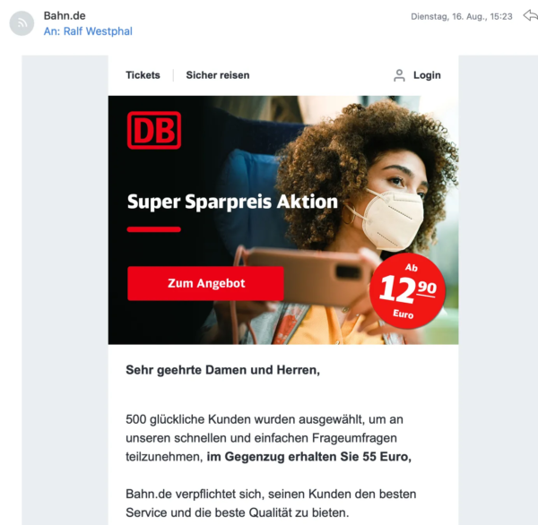
Vorsicht bei Erpressersoftware!
Digitale Erpressungsversuche werden immer zahlreicher und immer raffinierter. Ich habe nicht nur davon gehört oder gelesen, sondern in der direkten Verwandtschaft hat es ein Unternehmen „erwischt“. 100-prozentige Sicherheit gibt …

Kollaboration im Office mit Kanbanize
Ein Tool, was mich für die digitale Kollaboration im Office begeistert ist Kanbanize. Dort kann man wirklich sehr fortgeschritten und smart zusammenarbeiten. Mit seinen verschiedenen Perspektiven auf den Flow im Office, der …
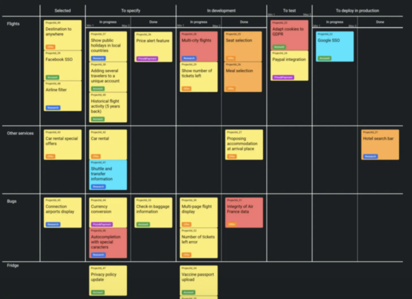
Kollaboration mit Kanbanboards
E-Mail und Dokumentenablage sind schon lange keine geeigneten Werkzeuge mehr für echte Zusammenarbeit im Büro. Reine Dokumentenablage ist oft ein Datenfriedhof, Informationen versickern in persönliche Postfächern und keiner im …

Digitale Visitenkarten
Auch wenn analoge Visitenkarten schön sein können, wenn Sie hochwertig sind, erweisen sie sich nicht mehr wirklich als praxistauglich. Rein digitale Visitenkarten mit QR Code, deren hinterlegte Informationen man schnell ändern …
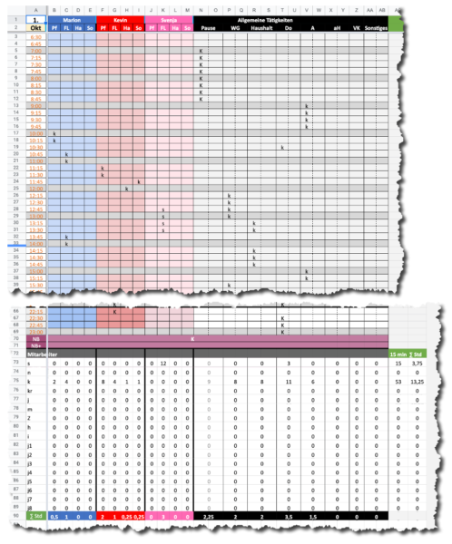
Zeiterfassung mit Google Sheets
Eine Kundin, die am Anfang des Aufbaus einer neuen Organisation steht, benötigte ein Werkzeug zur Zeiterfassung. Allerdings gab es dafür sehr spezielle Anforderungen, die wir bisher in keinem der am Markt angebotenen …
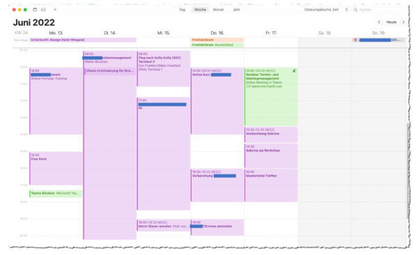
Richtige Kalenderpflege
Sie wollen produktiver und zufriedener im Job sein? Dann sollten Sie sich als Erstes Gedanken über Ihre Ziele machen. Direkt danach ist die richtige Kalenderpflege der zweite Schritt. Die Tätigkeiten und Zeiten, die Sie der …
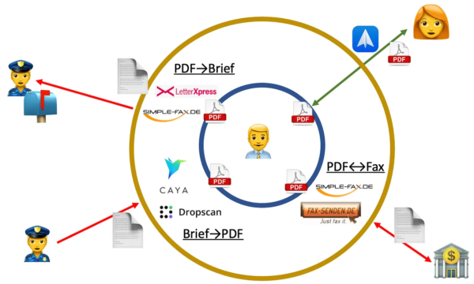
Digitalisierungsbrücken zu analogen Geschäftspartnern
Insbesondere bei Deutschen Behörden scheint die Digitalisierung noch nicht angekommen. Vereinzelt trifft das auch auf Unternehmen zu. Diese Organisationen bestehen für verschiedenste Dokumente, manchmal die Kommunikation …

App-Experten fragen: Der Digitalisierungsfalle entkommen
Ask the App Experts (AtAE) ist der Ausbruch aus der Digitalisierungsfalle. Mit AtAE bekommen Ihre Mitarbeitenden Antworten auf ihre persönlichen Software-Fragen bezüglich ihrer individuellen Probleme. „Software is eating the …
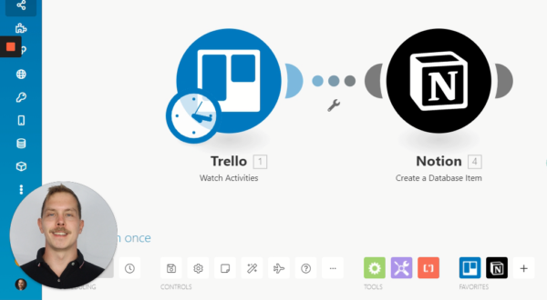
Mit Integromat Trello-Notion-Verbindung herstellen
Transkript zum Video: Ich hab‘ euch was Leckeres gebaut. Und zwar eine einfache Möglichkeit, wie alle Trello Karten, auf denen ihr verlinkt werdet, völlig automatisiert über Integromat in euer System in Notion übertragen werden …
Lagerung im Handwerk: Statisch oder chaotisch?
Handwerker lagern ihre Artikel meistens statisch und nicht chaotisch. Ist das noch zeitgemäß? In diesem Artikel rede ich über die Vor- und Nachteile beider Belegungsstrategien bei der Lagerung im Handwerk und über deren …
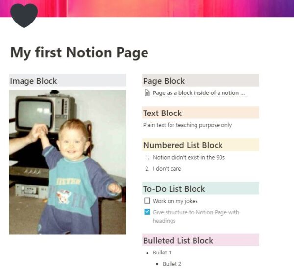
Notion – A simple beginners guide
Notion is one of the most flexible note taking and organizing programs out there. That’s because of Notion’s block system. So today I’m going to show you how blocks work. Blocks and their hierarchies allow you to build your …
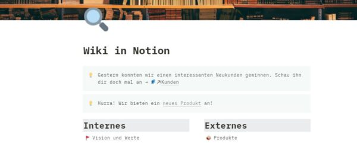
Unternehmenswiki in Notion
Notion ist an Vielfältigkeit kaum zu überbieten. Heute zeige ich dir, wie du darin kostenlos ein Unternehmenswiki erstellst. Im Video veranschauliche ich, wie ein Unternehmenswiki aufgebaut sein kann und welche Notion-Blocks …
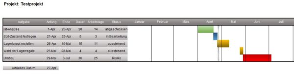
Einfacher Excel-Projektplan
Ich zeige dir heute einen einfachen Projektplan in Excel. Diesen benutze ich selbst und du darfst ihn dir gerne downloaden und frei verwenden. Die Datei findest du am Ende dieses Artikels. Excel ist verblüffend vielfältig und vor …
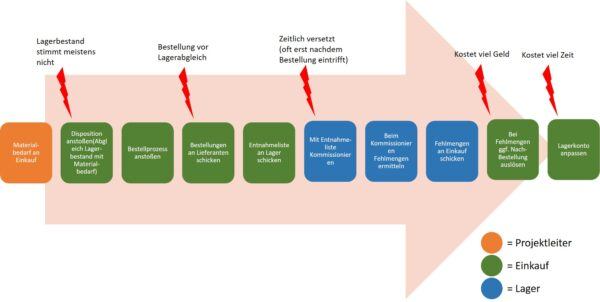
Teure Nachbestellungen abgestellt
In diesem kurzen Praxisbeispiel zeige ich dir, wie mein Kunde und ich einfach und investitionsfrei ein Problem mit zu vielen Nachbestellungen gelöst haben. Vor Kurzem gab es bei einem Kunden folgendes Problem: Nachdem eine …

Notion – Nutzen und meine Meeting-Datenbank
Heute geht es um Notion! Am Anfang zeige ich dir ‚live‘ meine Meeting-Datenbank, welche du dir downloaden und gleich in dein Notion integrieren kannst. Danach werde ich darüber reden, was Notion eigentlich ist, wofür ich Notion …
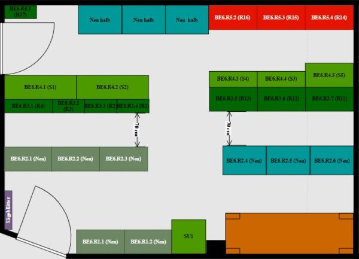
Fallstudie Lean Lager – Teil 1
Ein Metallbauer möchte sein Lager optimieren. Wir unterstützen ihn dabei und berichten darüber. Der vorliegende Teil 1 der Lean Lager-Fallstudie widmet sich der Planung der Maßnahmen im Lager. Im zweiten Teil wird es um die …

Visuelles Management – Praxisbeispiel aus dem Karosseriebau
Visuelles Management ist den meisten Unternehmern ein vertrauter Begriff. Während wenige sich noch mit der Umsetzung dieses Lean-Ansatzes schwertun, sind die anderen sich seiner potentiellen Vorteile bewusst. Durch optische Reize …
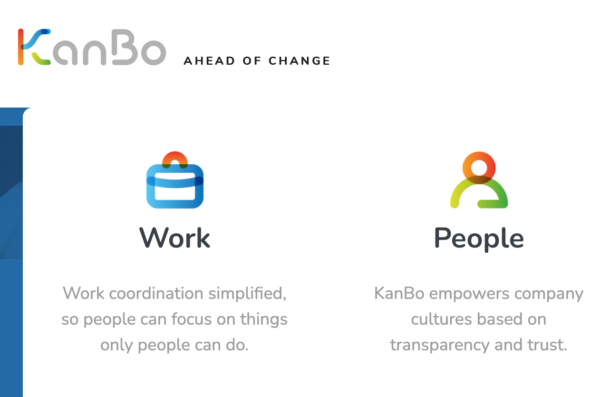
KanBo – Zusammenarbeit der Zukunft
Mit KanBo kann es gelingen, die Zusammenarbeit Ihren Teams auf eine neue Ebene zu heben. In KanBo lassen sich alle Tätigkeiten, die für effiziente Teamarbeit nötig, sind in einem einzigen Tool darstellen. KanBo sorgt dafür, dass …
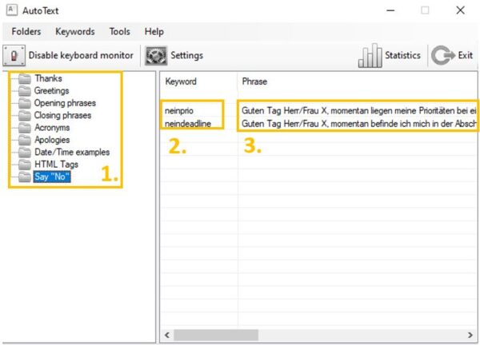
Die Kunst des schnellen Nein-Sagens
„Nein-Sagen“ können ist eine hilfreiche, besser noch absolut notwendige Fähigkeit im Arbeitsleben. Wer im Job nicht „Nein-Sagen“ kann, geht hoffnungslos unter. Aber keine Sorge, die Fähigkeiten des Nein-Sagens können Sie …
In den Fluss kommen für höhere Produktivität und mehr Zufriedenheit
„Wie kann ich meine Produktivität erhöhen“ und „Wie kann ich meine Arbeit und mein Leben in ein Gleichgewicht bringen“ sind moderne Versionen der uralten Frage „Wie führe ich ein gutes Leben“. Produktiv zu sein, Berufs- und …
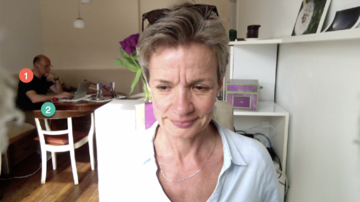
In die Falle gelaufen beim Coworking@Home
Unterbrechungen, auch kurze, sind der Produktivitätskiller #1. Und es erfordert die ganze Frau und den ganzen Mann, sich ihnen zu widersetzen und im Fluss zu bleiben. Das habe ich während des Homeoffice in Corona-Zeiten gerade …

Absichtsvolle Begegnungen statt Meetings
Meetings sind die Pest, oder? Jedenfalls kenne ich niemanden, der es begrüßen würde, zu einem Meeting eingeladen zu werden. „Wir müssen uns unbedingt mal wieder treffen!“ mag vielleicht im Freundeskreis nach Jahren der …
Warum Digitalisierung überall?
wir Warum greift die Digitalisierung überall jetzt so um sich? Warum wenden sich Handwerksbetriebe wie Vorstandsetagen an mich mit der Bitte um Unterstützung bei der Digitalisierung? Manchmal bin ich selbst darüber ein wenig …

Mit Time-Blocking gegen die Kalender-Täuschung
Was die folgende optische Täuschung, die Sie sicherlich kennen, mit Time-Blocking zu tun hat, erfahren Sie später: Was auch immer Sie beim ersten Blick darin sehen – eine Vase oder zwei Gesichter –, es ist eben nur eine mögliche …

Aufgaben in Quadranten bearbeiten
Aufgaben sind nicht gleich geschaffen. Offensichtlich ist das in Bezug auf ihren Inhalt. Ich meine hier aber ihre „Komplexität“. Komplexität hört sich nach Schwierigkeit an. Doch auch darum geht es mir nicht. Ich meine so etwas …
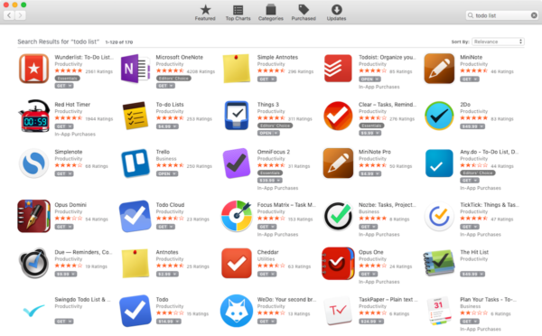
Evolution in der Digitalisierung
Die Digitalisierung ist gekommen, um zu bleiben. Daran besteht kein Zweifel. Der Begriff steht im Grunde für ein Naturgesetz: Analoges und Manuelles, das sich digitalisieren lässt, wird früher oder später digitalisiert und so …
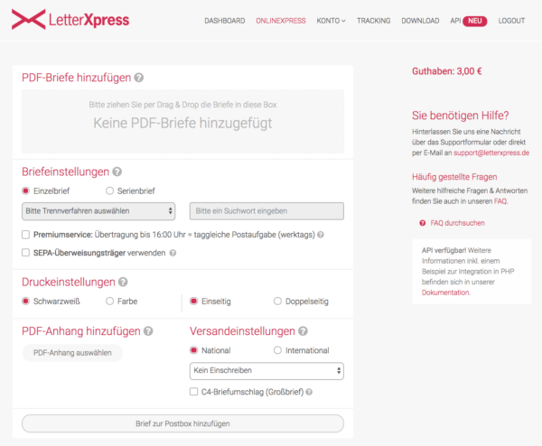
Postversand papierlos
Endlich digital mit „Papiertigern“ kommunizieren! Nun bin ich seit Jahren papierlos in meinem eigenen Geschäft unterwegs und unterstütze Unternehmen immer wieder darin, sich auch auf diesen Weg zu machen. I walk my talk. Das …
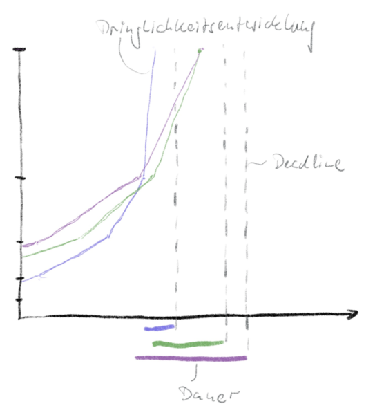
Was ist eigentlich dringend? – Die Eisenhower Matrix II
Mit der Eisenhower-Matrix priorisieren Sie Aufgaben nach Dringlichkeit und Wichtigkeit. Das scheint intuitiv einfach – ist es am Ende dann aber doch nicht. Denn was ist „wichtig“, was ist „dringend“? Sie haben für beides ein …

Was ist eigentlich wichtig? – Eisenhower Priorisierung I
Es gibt eine zentrale Technik im Zeitmanagement in der Aufmerksamkeitsgestaltung, die in Trainings einerseits Aha!-Erlebnisse bei den Teilnehmern hervorruft, andererseits aber bei der praktischen Priorisierung Stirnrunzeln. Das …
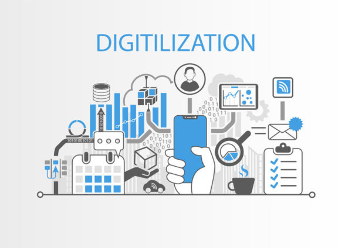
Digitalisierung endlich verständlich
Ein Rätsel geht um in Deutschland: Was ist Digitalisierung? Die Digitalisierung ist in aller Munde, manchmal als Hoffnungsträgerin, manchmal als Bedrohung. Was die Digitalisierung aber genau ist, das wird bei all dem Begriffs …

Werkzeugkasten der Planungsinstrumente
Zum Zeitmanagement gehört die Planung. In der Planung legen Sie fest, was wann wie lange zu tun ist. Ohne Planung keine Übersicht. Ohne Übersicht keine Klarheit und kein Fokus für zügige Abarbeitung. Und ohne Planungsinstrumente …

Das Einmaleins der Kalendereinträge
Es ist gar nicht so einfach, über den rechten Gebrauch des Kalenders zu sprechen. Das habe ich gerade in einigen eintägigen Zeitmanagement-Workshops bemerkt, die an vier aufeinander folgenden Tagen stattfanden. Indem ich jeden …

Die Aufmerksamkeitsuhr kennenlernen
Mit dem Begriff „Attention Design“ (oder Aufmerksamkeitsgestaltung) scheine ich einen Nerv getroffen zu haben. Schon wird ein Artikel von mir zitiert und die Idee darin weiterentwickelt. Das Bild der „Aufmerksamkeitsspirale“ …
Attention, please!
Irgendwas ist immer. Ihre Aufmerksamkeit soll bald hier, bald dort sein. Aufgaben, Themen, Dinge wollen, dass Sie sich um sie kümmern. Selten, dass Sie sich dem, was Wichtig ist, ausreichend widmen können. Das Dringende schiebt …

Attention Design ist das neue Zeitmanagement
Wer würde nicht gern mehr Zeit für „das Wesentliche“ haben? In Bezug auf die Zeit scheinen viele Menschen in stetem Mangel zu sein. Nicht umsonst habe ich meine kleine Firma bei Gründung „Zeitgewinn Hamburg“ genannt. Mit der …
Brainstorming online
Der Schwerpunkt des letzten Beitrages war das Thema Meetingzeit reduzieren und ich hatte bereits angekündigt, dass Matthias Schmitz von meebility uns die App meebility vorstellen wird, mit deren Hilfe man z.B. den zeitaufwendigen …

Meetingzeit reduzieren – Produktivität steigern
Meetings sind nach wie vor einer der größten Zeitdiebe in Unternehmen. Einen Arbeitstag pro Woche verbringt jeder Mitarbeiter durchschnittlich in Meetings. Das mittlere Management benötigt 40% und 50% seiner Arbeitszeit für …
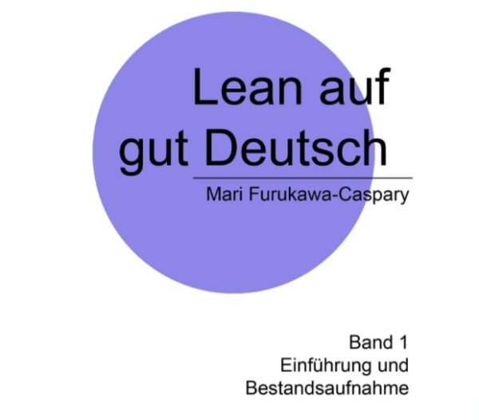
Lean auf gut Deutsch
Über einen Beitrag auf Xing bin ich auf das Buch „Lean auf gut Deutsch“ von Mary Furukawa-Caspary gestoßen und habe mir aufgrund des kulturellen Hintergrunds einer Doppelsprachlerin neue Einsichten versprochen und gehofft, dass …
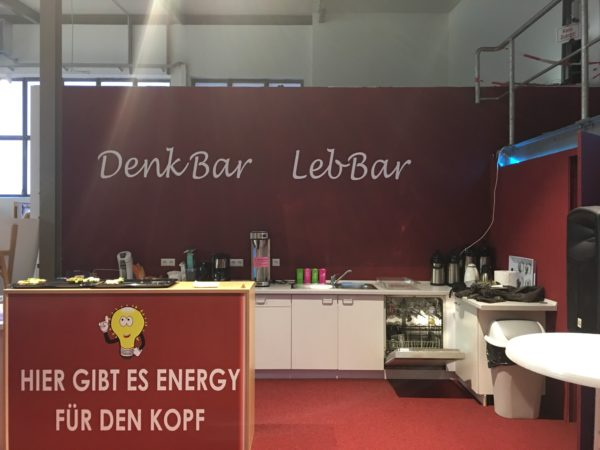
Lean Administration bei DMG
Ein Hauch Silicon Valley in Hamburg-Lurup Um sich moderne Unternehmen anzuschauen, die sich neuen Arbeitsweisen öffnen, den New Work Gedanken teilweise schon leben, braucht man nicht unbedingt ins Silicon Valley zu fahren. Ein …
Telefonische Erreichbarkeit noch wichtig?
In Zeiten zunehmender Digitalisierung, in der Messenger seit Jahren auf dem Vormarsch sind, mag das gute alte Telefon ein wenig anachronistisch erscheinen. Studien zeigen allerdings, dass manche Kunden nach wie vor Wert auf …
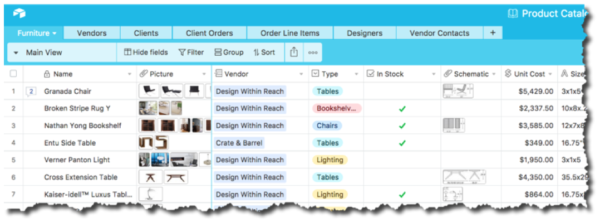
Es muss nicht immer Excel sein
Gerade bin ich sehr begeistert von einem neuen digitalen Tool. Das möchte ich Ihnen heute kurz vorstellen. Es füllt eine lange existierende Lücke in Ihrem elektronischen Werkzeugkasten – auch wenn Sie sich der vielleicht nicht so …

Gruselige Bürohelfer – Weg mit der Verschwendung
Als ich neulich dieses Plakat gesehen habe, hat es mich ordentlich gegruselt. Mein ersten Gedanken: Häßlich, altmodisch und Verschwendung pur! Wenn Sie verstehen wollen, was meine Arbeit, meinen Anspruch ausmacht, dann müssen Sie …

Personalverwaltung optimieren
Die Personalverwaltung ist wichtiger Bestandteil eines jeden Unternehmens. Sie verursacht jedoch häufig auch hohen Arbeitsaufwand, der vor allem bei schlechter Organisation oder fehlender IT verwirrend und kompliziert werden …
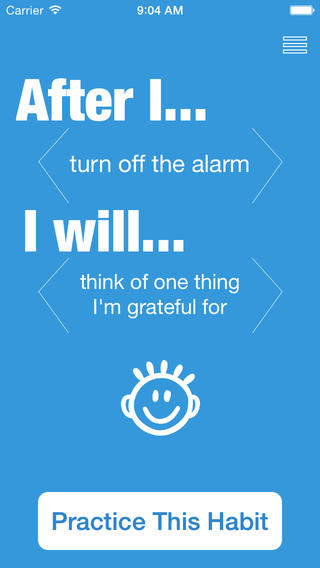
Mit kleinen Schritten ins Neue (Jahr)
„Alles Gute zum neuen Jahr!“ Das haben Sie in den letzten Tagen – 2017 ist ja noch frisch – sicherlich vielen Menschen gewünscht. Vielleicht haben Sie auch noch weitere Wünsche angeschlossen. Glück, Gesundheit, Liebe kann jeder …
Konflikte als Ursache von Verschwendung
Die Arbeit soll Ihnen im Büro flott von der Hand gehen. Dafür steht der Begriff Lean Digital Office bei mir. Lean bedeutet verschwendungsarm, d.h. ohne Abweichungen, ohne Verzögerungen, ohne Wiederholungen. Konkrete …
Cloud-Nutzung im Unternehmen
Was leistet die Datenwolke im Unternehmen? Das Thema Wissensmanagement gewinnt in der heutigen Arbeitswelt immer stärker an Bedeutung: Die Leistungsfähigkeit der Mitarbeiter hängt zunehmend davon ab, über welche Informationen sie …

Kollaborieren Sie schon oder ärgern Sie sich noch?
Zweck der Arbeit im Office ist die Produktion von Inhalten, von Content. Je flüssiger, je verschwendungsärmer das klappt, desto besser. Yay! 🙂 Aber wie werden diese Inhalte hergestellt? Darüber ist auch nachzudenken auf dem Weg …

Gar nicht lean ist auch mal gut
Das schlanke, entschlackte, effiziente Büro ist meine Leidenschaft. Doch vor einiger Zeit habe ich erfahren, dass es manchmal gut ist, nicht lean zu sein, nicht auf die „schlanke Linie“ zu achten. Ich war eingeladen, einen …
Warnung vor dem Werkzeug!
Werkzeuge sind nützlich. Sie machen es leichter, unsere Aufgaben zu erledigen. Das gilt für einen Locher wie für eine Textverarbeitungssoftware. Ebenfalls gilt das für Methoden, die einfachen wie die komplizierteren. Damit …
Täglich mehr schaffen mit der Ivy-Lee-Methode
Wenn Sie notorisch das Gefühl haben, zu wenig zu schaffen, dann habe ich hier eine sehr einfache Methode für Sie, die ein nützliches Werkzeug sein kann, damit Sie mehr schaffen. Sie soll zurückgehen auf einen Mitbegründer der …
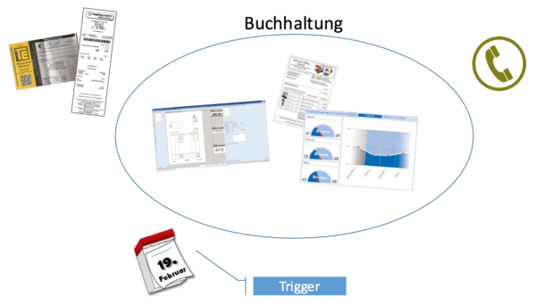
Ist das Content oder kann das weg?
Alle Aufgaben im Büro haben ein Ziel: die Produktion von Inhalten (Content). Diesen Begriff benutze ich als Dach für so verschiedene konkrete Produkte wie Rechnungen, Berichte, Überweisungen, Termine, Anträge, Flugtickets usw …

Unterbrechungen im Büro – Was tun?
Im Lean Digital Office geht die Arbeit flüssig von der Hand. Sobald eine Aufgabe begonnen wurde, wird sie zügig erledigt. Das erwartet ja auch jeder Auftraggeber. Wenn Sie am Supermarkt an der Kasse stehen, wenn Sie im Restaurant …
Lean auf den Punkt gebracht
Die Arbeit im Büro soll fließen. Stetig, zügig sollen alle Aufgaben erledigt werden. Dann ist die Produktivität hoch und der Stress gering. Darum geht es beim Lean Digital Office im Kern. Aber was bringt die Arbeit immer wieder …
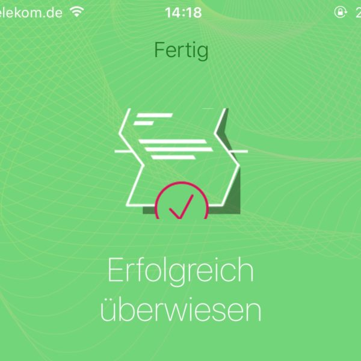
So macht Rechnungen zahlen Freude
Rechnungen bezahlen mit Freude? Sie runzeln jetzt sicher die Stirn angesichts der Überschrift dieses Blogartikels. Aber ich meine es wirklich so: Neuerdings macht mir das Zahlen von Rechnungen Spaß. Darüber, dass überhaupt etwas …

Prozesse im Büro verbessern
Was ist es eigentlich, das mit meinem Ansatz des Lean Digital Office verbessert werden soll? Es ist die Erledigung von Aufgaben und die Prozesse im Büro. Ihre Abarbeitung soll schlanker (engl. lean) vonstatten gehen. Weniger …
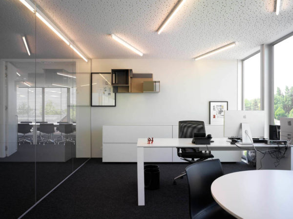
Verschwendung im Büro vermeiden
Das Büro von Morgen soll noch produktiver sein und gleichzeitig entspannter funktionieren. Ich glaube fest daran, dass das kein Widerspruch ist. In meinem Konzept vom Lean Digital Office (abgeleitet von Lean Administration) ist …
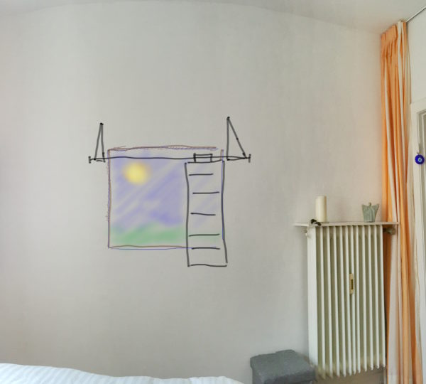
Gemeinsam zu einer besseren Lösung
Büroarbeit heute ist voll von Herausforderungen. Kreativität, Lösungskompetenz, Flexibilität sind gefragt. Natürlich gibt es auch noch eine Menge stupider Aufgaben – doch gerade davon sollen Sie durch „digitale Helferlein“ ja …

Lean Digital Office
Das Büro von Morgen: Lean Digital Office Wenn in Unternehmen über Produktivität nachgedacht wird, ist der Blick meist nur auf die Produktion gerichtet. Das ist verständlich und richtig – allerdings wird damit ein großes …
Gehaltsabrechnung mobil
Lohn- und Gehaltsabrechnung mobil erstellen Wenn ich auf Geschäftsreisen bin, ist es wichtig, dass ich auch von unterwegs Zugriff auf wichtige Geschäftsdaten habe. Dies trifft nicht nur auf Kundeninformationen zu, sondern auch …
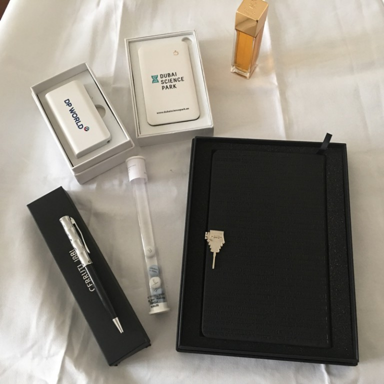
Personalisierte Werbegeschenke
Personalisierte Werbegeschenke unterstützen Kundenbindung aufzubauen und zu verstärken Für Unternehmen aller Größenordnungen hat neben der Neukunden-Akquise der Aufbau und die gezielte Stärkung einer langfristigen Kundenbindung …

Checkliste Reisen und Arbeiten
Immer wieder habe ich gemerkt, dass auf Reisen generell zu viel einpacke, dafür aber wichtige Kleinigkeiten, die das Leben wirklich leichter machen, gern mal vergesse. Da ich immer mehr Arbeiten und Reisen verbinde, kann das …

CoWorking am Meer
Von Marrakesch bin ich mit dem Bus sehr entspannt, klimatisiert und für nur 10 Euro in drei Stunden nach Agadir gefahren. Magda vom Sun-Desk hatte einen Taxifahrer organisiert, der mich vom Busbahnhof mach Taghazout gebracht hat …
Arbeiten im Ausland
Arbeiten wo andere Urlaub machen- Meine Premiere in Marokko Lange schon ruft immer wieder das Fernweh in mir. Ich möchte in meinem Leben Reisen und Arbeiten mehr verbinden. Obwohl es mich so sehr in die Ferne zieht, gibt es auch …

Messeauftritt planen
Worauf kommt es wirklich an? Die CeBIT 2016 steht vor der Tür und ich freue mich darauf, denn seit zwei Jahren finde ich sie – nach langer trüber Zeit – wieder inspirierend. Nicht nur einige Einladungen, sondern auch die …
Mitarbeiterführung – Gewusst wie
Oft höre ich Klagen darüber, dass ein Betrieb, eine Abteilung einfach nicht funktioniert, obwohl die besten Ressourcen zur Verfügung stehen. Die Geräte sind auf dem Stand der neuesten Technik, die Mitarbeiter verfügen über die …

Digitaler Dienstplan
Einer meiner Kunden, ein sehr erfolgreicher und stetig wachsender Anbieter von Kochkursen-, Events und Catering ist beinah vorbildlich in Sachen Modernisierung/Digitalisierung der Administration. Im letzten Jahr haben wir große …

Tipps für effizientes Büromanagement
Gutes Büromanagement – weniger Druck und mehr Effizienz Heutzutage nimmt der Leistungsdruck stetig zu, sodass sich viele Angestellte ihren Arbeitsalltag immer schwieriger bewältigen können. Besonders mittelständische Unternehmen …
Druckkosten reduzieren
So können Unternehmen sparen: unnötige Drucke und Druckkosten reduzieren! Machen wir eine kleine Rechnung auf: Wenn die Druckkosten für eine Seite mit einem herkömmlichen Drucker beispielsweise bei 6 Cent pro Seite liegen, dann …
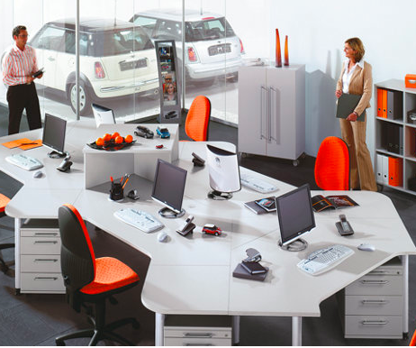
Nachhaltigkeit im Büro
Nachhaltigkeit ist eines der Themen des 21. Jahrhunderts. Das Bewusstsein für endliche Ressourcen und Rohstoffe ist vorhanden und dennoch zögern viele Unternehmen damit ihren Beitrag zum systematischen Wandel beizutragen. Dabei …
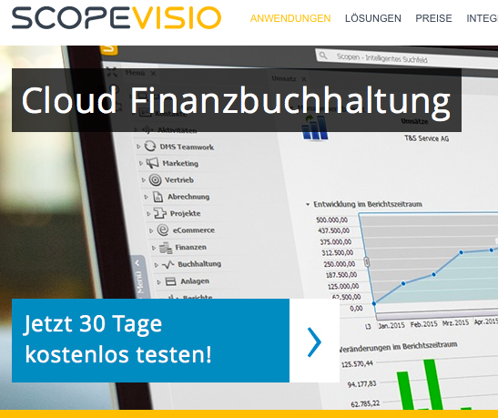
Beleglose Buchhaltung mit Scopevisio
Im Rahmen des papierlosen Büros lebe und vermittle ich auch die Beleglose Buchhaltung. Beide Themen sind untrennbar an die Digitalisierung von Prozessen gebunden. Um mich dem Thema anzunähern, habe ich mich letztes Jahr gleich …
Papierloses Büro – Schritt 1
Papierloses Büro – Schritt 1 Formulieren Sie Ihre Ziele und machen Sie ein Status Quo Analyse. Wo stehen Sie, Ihr Unternehmen, Ihre Mitarbeiter, Kunden und Lieferanten bei diesem Thema. Zuallererst sollten Sie sich in die Vision …
Leitfaden Papierloses Büro
10 Schritte zum Papierlosen Büro – ein Leitfaden Wenn Sie sich entschlossen haben, dem Papier in Ihrem Büro den Kampf anzusagen, sind Sie hier genau richtig. Über mehrere Monate werde ich Sie systematisch und schrittweise auf dem …
VW Effizienz Initiative oder früher Aprilscherz?
Ich bin erschüttert, da ich in der Welt lese „Der Autobauer Volkswagen reduziert den Einsatz der Präsentationssoftware Powerpoint.“ Was für ein Fortschritt! Doch Effizienz sieht anders aus. Nicht nur, dass das der „Welt“ einen …
Vorteile papierloses Büro
Vorteile des papierlosen Büros Manchmal bin mit meiner Beratung und Werbung für das papierlose Büro fast missionarisch unterwegs und bin immer wieder mal erstaunt über die Fragen nach den Vorteilen oder die Einwände. Im Rahmen …
Vertrieb ist überall
Vertrieb, Marketing, Employer Branding finden immer statt Wieder einmal habe ich ein schönes Beispiel erlebt, dass Vertrieb, Marketing oder Employer Branding mitnichten Sache nur allein der Vertriebs- oder Marketingabteilung …
Weniger Papier, mehr Freiraum
Weniger Papier – mehr Freiraum mehr für kreative Büroeinrichtung Nein, keine Bange. Diesmal geht es nicht um eine neue Software, die bei der Planung und Gestaltung des Arbeitsumfeldes oder der Büroorganisation helfen soll …
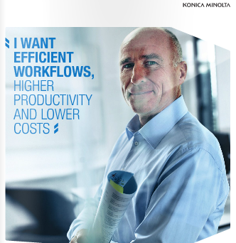
Weniger drucken, sinnvoller drucken-effizienter Arbeiten
Weniger drucken, sinnvoller drucken-effizienter Arbeiten Wir leben in einer digitalen Arbeitswelt, die noch vor wenigen Jahrzehnten wie ein Szenario aus einem Science Fiction Film erschienen wäre. Elektronische Briefe erreichen …
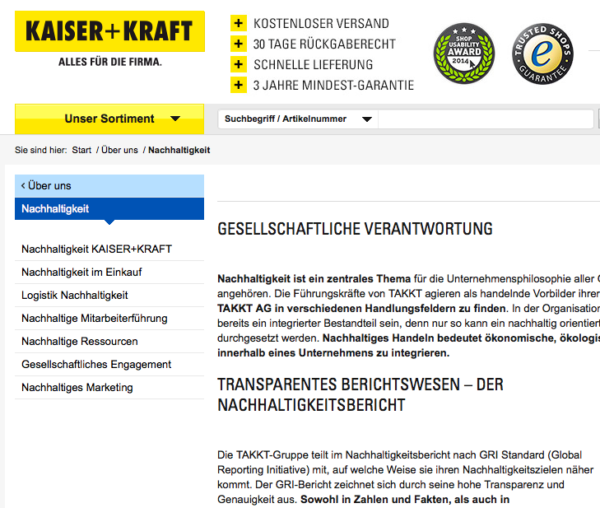
Nachhaltigkeit im Büro
Nachhaltigkeit im Büro spart Geld und CO2-Ausstoß „Bitte drucken Sie diese Email nur aus, wenn es unbedingt nötig ist“: Dieser Hinweis, verbunden mit den Informationen, wie viel Wasserverbrauch und CO2-Ausstoß bei Herstellung …
Zeitgeschenk von Zeitgewinn
Aktion „Zeitgeschenk von Zeitgewinn“ Jedes Mal, wenn Sie mich als Professional Organizer für einen Tag buchen, schreibe ich 1 Stunde auf einem Zeitsammelkonto gut. Die gesammelten, gutgeschriebenen Stunden – und es werden …
Jahresende – Aufräumzeit
Mitarbeiter verschiedener Unternehmen waren letztes Jahr begeistert von unserer gemeinsamen Aufräumaktion und wünschen sich eine Wiederholung. Sie waren erstaunt, wie viel Ballast sie in kurzer Zeit abwerfen konnten und gingen …
Effizienzsteigerung durch Headsets
In einem der letzten Artikel über die papierenen Allround Organizer waren Zettel, Post it’s und Blöcke Thema. Im Berufsleben gilt es aus mehreren Gründen diese zu vermeiden: Nachteile dieser Aufzeichnungsform: Aber warum fällt es …
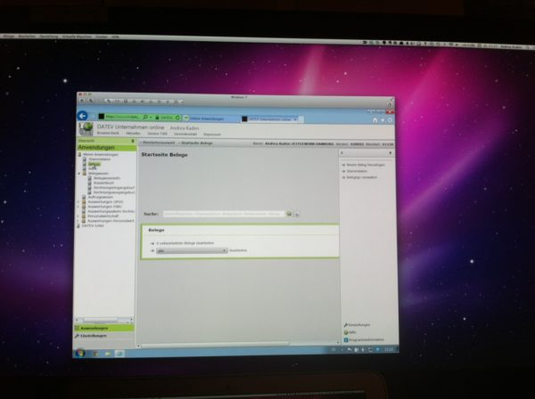
Datev Unternehmen Online auf Macbook
Endlich: Datev Unternehmen Online auf meinem Macbook! Das Ergebnis zählt: mit ein bisschen Aufwand läuft nun von der Datev Unternehmen Online auf Mac Air 11“ unter Windows 7 über VMWare Fusion. Unternehmen online ist für mich …
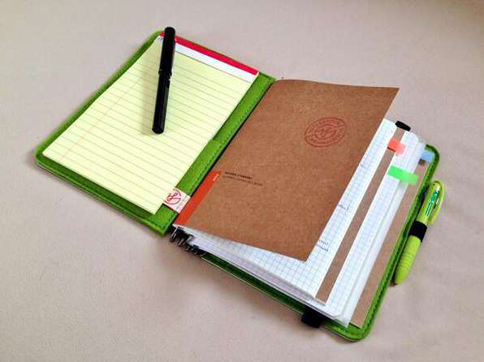
Allround Organizer
Allround-Organizer erleichtert Übergang zum papierlosen Arbeiten Praktisch in jedem Büro wird heutzutage am Computer gearbeitet. Die meisten Informationen erreichen uns per Computer, die meisten Informationen bearbeiten und …
10 Tipps für erfolgreiche Akquisegespräche
Heute hat mich der Mut gepackt und ich habe mich in „Kaltakquise“ geübt. Das Ergebnis vorweg: Ich bin grandios gescheitert. Aber ich habe viel gelernt und werde es in den nächsten Tagen bestimmt noch einmal versuchen. Hier will …

Bewerbermanagement professionalisieren
Die Suche nach qualifizierten Fachkräften ist für jedes Unternehmen eine wichtige Aufgabe. Fachlich sind die meisten Unternehmen dem dieser Aufgabe gewachsen, aber organisatorisch ist die Neubesetzung einer Stelle für viele eine …
Endlich Zeit für Wichtiges
Zeit für Wichtiges Sagen Sie endlich „Ja“ zum „Nein-Sagen“ und schützen Sie Ihre Zeit für Wichtiges. Kennen Sie das? Sie haben einen super Plan für den Tag im Job, aber nicht nur das Telefon und der Messenger machen Ihnen einen …
Office Organizing services for free
Get my organizing services for free! Ich habe einen Traum: Ich möchte mehr über das europäische Ausland und den großen „Rest“ der Welt lernen. Wie leben und arbeiten Menschen anderswo? Was sind ihre Werte und Visionen? Und ich …
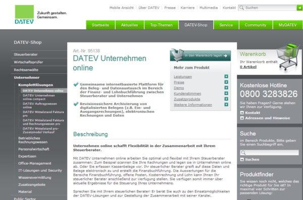
Endlich beleglose Buchhaltung möglich
Hurra: Endlich beleglose Buchhaltung umgesetzt! Seit ein paar Wochen, ja man kann fast sagen Monaten, treibt uns das Thema um. Jetzt freuen wir uns über die Ergebnisse: Aber ich muss einräumen, die Umstellung hat uns viel Zeit …
Endlich ein Zeitgewinn – und was nun?
Endlich ein Zeitgewinn – und was nun? Dieser Tage habe ich einen Zustand in Bezug auf Arbeit erreicht, den ich allen Kunden hin und wieder von Herzen wünsche: Ich habe Zeit, viel Zeit. Was ist passiert? Ich hatte vor ein paar …
Tipps für die perfekte Telefonkonferenz
Telefonkonferenzen professionell meistern − Rob Gorby von Powwownow erklärt, wie das geht Wie lassen sich Audiomeetings so effizient wie möglich gestalten? Nachdem ich ja nun schon einiges über Telefonkonferenzen geschrieben …

Unternehmens Wiki – die Qual der Wahl
Ein zeitgemäßes Wissensmanagement im Unternehmen ist meines Erachtens kaum ohne vernünftiges Wiki möglich. Wenn Sie sich dafür entschieden haben, ein Wiki einzusetzen, folgt die Qual der Wahl. Es gibt am Markt inzwischen über 100 …

Teamwissen nutzen mit Firmenwiki
Welcher Unternehmer möchte heutzutage nicht professionelles Wissensmanagement im Unternehmen betreiben und fördern. Es dürfte sich inzwischen herumgesprochen haben, dass, ohne die Nutzung von Team- und Kollektivwissen …

Zeitmanagementziele
Kennen Sie Ihre Zeitmanagementziele? Immer wieder werde ich in Sachen Zeitmanagement nach Tipps und Tricks gefragt. Natürlich habe ich zahlreiche Techniken und Tricks auf Lager. Aber zunächst müssen sich die Fragenden eine …
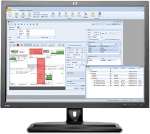
Papierlose Buchhaltung – was geht?
Seit Monaten schon beschäftige ich mich wieder intensiver mit dem Thema papierlose Buchhaltung. Inzwischen habe ich ein nahezu papierloses Büro und sehne den Tag herbei, an dem ich auch die papiernen Buchhaltungsbelege nach …
Das beste Programm für das papierlose Büro?
Welches ist das beste Programm für ein papierloses Büro? Immer wieder werde ich auf Vorträgen oder in Workshops gefragt, welches denn nun das beste Programm für ein papierloses Büro sei. Und immer wieder gebe ich die gleiche …
Telefonkonferenz-richtigen Anbieter finden
Angebotsdschungel Telefonkonferenz – Wie finde ich den richtigen Anbieter? Telefonkonferenzen sind niemandem unbekannt und sind eine gute Alternative zu Präsenzmeetings. Wir wählen uns ein, die anderen Teilnehmer schalten sich …
Pomodoro-Technik– ein Produktivitätswundermittel?
Pomodoro-Technik – für den Extraschub Produktivität Wünschen Sie sich auch leicht umzusetzende Tipps und Tricks, um Ihre Konzentration und damit Produktivität steigern zu können? Dann lesen Sie einfach weiter… Wie Sie einigen …
Richtig kommunizieren
Das A&O: Schnell und richtig im Berufsleben kommunizieren Eine möglichst zeitsparende, zielführende und kostengünstige Kommunikation spielt in der Geschäftswelt eine wesentliche Rolle – sei es bei Meetings, Absprachen mit …
Lean Administration – Analysemethoden
Mit diesem Artikel möchte ich Ihnen einen kurzen Überblick geben, welche Analysemethoden auf dem Weg zur Lean Administration eingesetzt werden können um Verschwendung und Engpässe zu erkennen, zu eliminieren und die Prozesse zu …
Kanban im Büro steigert die Produktivität
Die Übersetzung von Kanban aus dem Japanischen klingt erst einmal befremdlich – „Karte“ oder „Tafel“. Was soll das nun für Ihre tägliche Arbeit im Team bedeuten? Gerne erläutere ich im Folgenden wie Kanban im Büro die …
Tipps für künstliche Beleuchtung im Büro
Wenn Sie die Beleuchtung in Ihrem Büro planen oder ändern wollen und unseren ersten Artikel zum Thema ergonomische Beleuchtung im Büro gelesen haben, stehen Sie jetzt vermutlich vor der Qual der Wahl. Die Entscheidung zwischen …
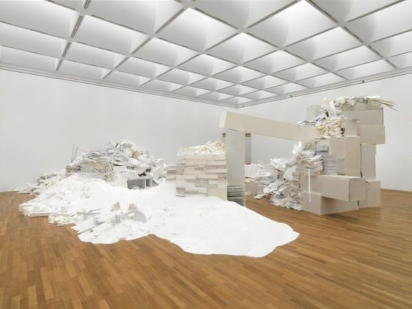
MUDA = Verschwendung
Muda, das japanische Wort für sinnlose Tätigkeit, Nichtvorhandensein von Sinn oder Nutzen und sinnlose Verschwendung erkläre ich gerne noch einmal anhand von Praxisbeispielen, die mir als Professional Organizer seit Jahren …
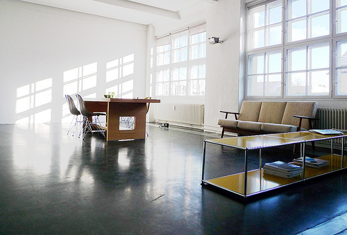
Ergonomische Beleuchtung im Büro
Ergonomisch richtige Beleuchtung im Büro für mehr Leistungsfähigkeit Bei meinen Besuchen bei Kunden vor Ort wird mir immer wieder deutlich, dass zur Büroorganisation so viel mehr gehört, als „nur“ Prozesse optimieren. Nur …
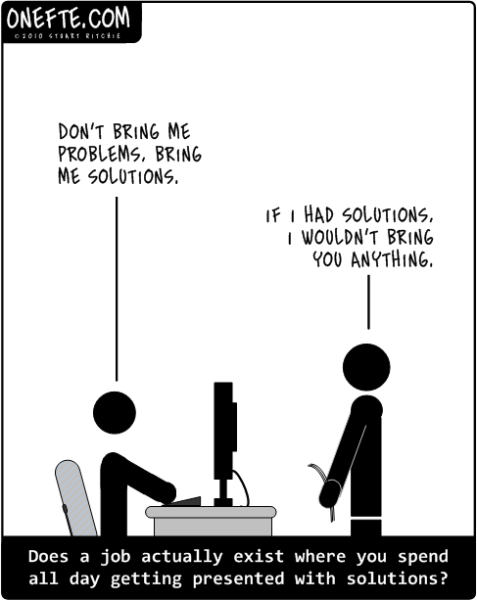
Lean Administration – Teil 3
Nachdem Sie die Prozesse einer intensiven Prüfung des Ist-Zustandes unterzogen haben, können Sie auf das Erreichen und Umsetzen des optimierten Soll-Zustandes hinarbeiten. Als erstes sollten überflüssige Arbeiten eliminiert und …
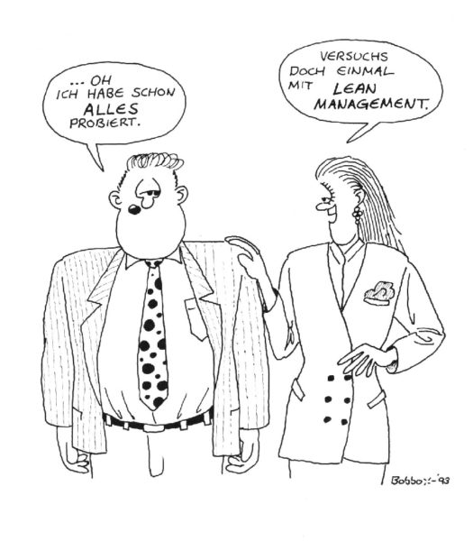
Lean Administration – Teil 2
Analysephase der Lean Administration Ziel der Analyse soll die Vorbereitung auf die Umstrukturierung der Prozesse durch die Identifikation der Wertschöpfungstätigkeiten sein. Sie stellt den ersten Schritt auf dem Weg zur Lean …
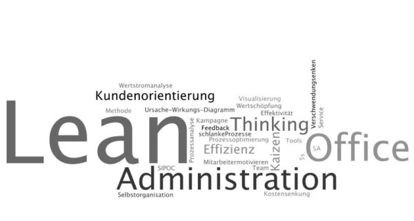
Lean Administration – Teil 1
Wie in meinen Artikeln zu Lean Office schon erläutert, lassen sich Prinzipien der Lean Production, die anfänglich bei Toyota entwickelt wurden, auch auf die Verwaltungsbereiche eines Unternehmens übertragen. Jedes Unternehmen hat …
Lean Office – Teil 2
Nach meiner Einführung zur Bedeutung von und Gründen für Lean Office Teil 1 stelle ich Ihnen hier Beispiele für die Vorgehensweisen auf dem Weg zu einer effizienteren Administration vor. Lean Office, Office Excellence, Schlankes …
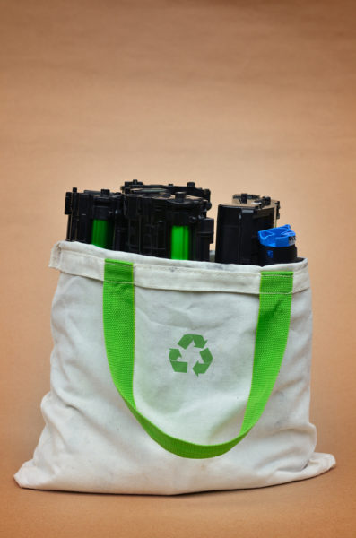
Umweltfreundlicher Umgang mit Druckerpatronen
Immer schön grün bleiben: Umweltfreundlicher Umgang mit Druckerpatronen Bis zum „Weltumwelttag“ der Vereinten Nationen (am 5. Juni eines jeden Jahres) sind es zwar noch ein paar Monate, dass sollte uns jedoch nicht davon …
Lean Office – Teil 1
Lean office = clean office = effizientes Büro! Meiner Meinung nach sollte sich jede zeitgemäße Büroorganisation mit dem Begriff „Lean“ auseinandergesetzt haben. Daher werde ich Ihnen verschiedene Lean-Methoden in einer kleinen …
Ordner im papierlosen Büro?
Ordner im papierlosen Büro: Die Ausnahme bestätigt manchmal die Regel Laut einer Erhebung des Verbandes Deutscher Papierfabriken verbraucht jeder Deutsche pro Jahr 244 Kilogramm Papier. Dieses hohe Aufkommen, das vor allem auf …
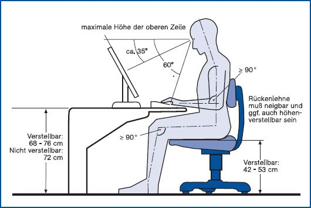
Gesundes Arbeiten im Büro – Teil 2 – Gesunder Bildschirmarbeitsplatz
Experten haben bewiesen, dass langes Sitzen am Arbeitsplatz negative Auswirkungen auf unsere Gesundheit haben kann. Bewegung zwischendurch, zum Beispiel der Gang ins nächste Büro, kann die Muskeln entspannen und die Augen …
Gesundes Arbeiten im Büro-Teil 1
Ein sicherer und angenehmer Arbeitsplatz erhält die Gesundheit und hilft, leistungsfähig zu bleiben. Die Beitragsreihe „Gesundes Arbeiten im Büro“ soll dabei helfen, den Büroalltag gesünder und den Arbeitsfluss produktiver zu …
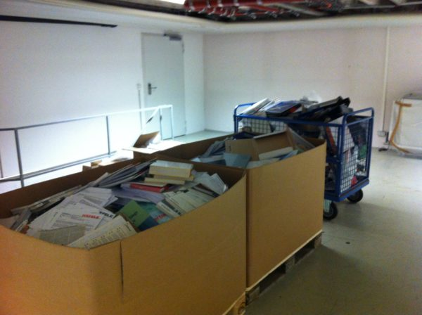
Workshop Aufräumen
Aufräumen – Schritt 1 zur Verbesserung der Arbeitsorganisation Ein sehr großes, erfolgreiches deutsches Unternehmen beauftragte mich mit einer Workshopreihe, die ich Ihnen anhand ihrer dargestellten Ist-Situation konzipiert …
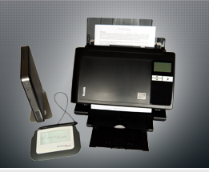
Mrs. Paperless testet das documentXpath
documentXpath – das perfekte Archivierungssystem? Heute widme ich mich einem Thema, auf das ich nach verschiedenen Apotheken-Besuchen gestoßen bin. Fällt Ihnen auch seit geraumer Zeit auf, dass Ihre Rezepte schwuppdiwupp …

Ordnung auf dem Rechner – Teil 2
Nach meinen kurzen Tipps zum „Blitzaufräumen“ der Ordner- und Laufwerkstruktur in Teil 1, folgen hier meine Hinweise zum richtigen Umgang mit der Ablagefläche Desktop: 2. Desktop Ich habe dies bewusst oben „Ablagefläche“ genannt …

Ordnung auf dem Rechner Teil 1
Wir haben ja schon festgestellt, dass der Jahresanfang hervorragend geeignet ist, um im Büro klar Schiff zu machen. Sie erinnern sich? ;-). Im letzten Artikel Ordnung auf dem Schreibtisch, habe ich Ihnen einige Tipps an die Hand …
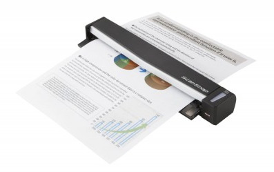
Mrs. Paperless testet den Fujitsu ScanSnap S1100
Testbericht Fujitsu ScanSnap S1100 Für meine Projekte bin ich viel unterwegs. Auf diesen Geschäftsreisen habe ich mir schon so manches Mal einen portablen Scanner gewünscht, mit dem ich Papierlosigkeit vorführen kann. Denn leider …

Meine letzte Walzstation – schee war’s
Der Organizer verabschiedet sich von einer insgesamt wunderbaren Walz. Meine letzte Walzwoche liegt hinter mir und die Eindrücke zu Vaude in Tettnang klingen noch nach. Mein erster Eindruck Schon am ersten Tag traf ich auf eine …

Und mittags geh ich heim – Die andere Art ein Unternehmen zu führen
Auf meiner Walz im letzten Herbst habe ich ein Unternehmen mit einer sogenannten Beta-Kultur besucht und war begeistert. Detlef Lohmann, Autor des Buches „Und mittags geh ich heim“, ist Chef dieses Unternehmens. Sein Buch war für …

Innovation Stuntman-Inspiration pur
In diesem Buch lernen Sie Menschen kennen, die mit ihrer Arbeit unsere Welt neu erfinden. »Innovation Stuntmen« führt Sie auf eine reichhaltig bebilderte Reise durch die aufregendsten Felder der Innovation. Ich bin immer wieder …
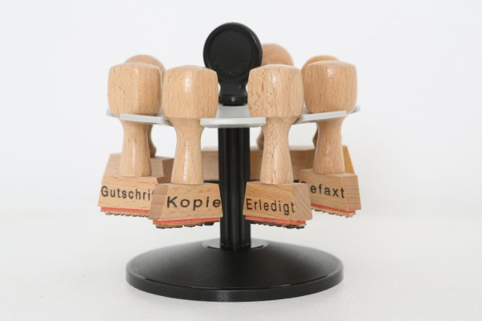
Papierloses Büro-Wofür braucht man noch Stempel?
Papierloses Büro-Wofür braucht man noch Stempel? Moderne Technik löst zunehmend händisch-aufwändige Arbeitsaufgaben im Alltag ab. Aber neulich bei meiner Beobachtung in einem Unternehmen musste ich eingestehen, dass es auch hin …

Meine Wanderschaft nähert sich dem Ende
Sie erinnern sich noch? Drei Walzstationen habe ich auf meiner Wanderschaft seit Herbst 2013 absolviert, nun folgt nächste Woche die 4. und damit auch letzte. Noch einmal zur Erinnerung: Besonders erfreulich finde ich die …
Zeitmanagement 3.0
Zeitmanagement 3.0 – jetzt erst recht! Wenn Sie den Eindruck haben, für nichts mehr richtig Zeit zu haben, wenn Sie also unter Zeitmangel leiden – dann befinden Sie sich nicht nur in guter Gesellschaft, sondern benötigen ein …
Aufgeräumt ins neue Jahr
Sind Sie nicht auch der Meinung, dass sich der Jahresanfang hervorragend eignet, um im Büro klar Schiff zu machen und somit aufgeräumt ins neue Jahr zu starten? Und noch ein schöner Effekt: Sie machen damit den ersten Schritt hin …

Papierloses Büro in zwölf Monaten
Papierloses Büro in zwölf Monaten Und ist der Jahresbeginn nicht ein idealer Zeitpunkt, um dieses Thema im Rahmen Ihrer guten Vorsätze in Angriff zu nehmen? Weil der Weg weniger mit neuer Technik zu tun hat, sondern mehr damit …
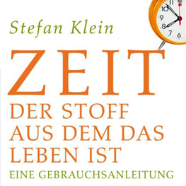
ZEIT – Der Stoff aus dem das Leben ist
Stefan Klein, Fischer Verlag Ein wunderbares Buch über die Zeit, wie wir sie empfinden, mit ihr umgehen und nicht zuletzt, das Beste aus der uns zur Verfügung stehenden Zeit machen können. Es geht um erfüllte Augenblicke im …
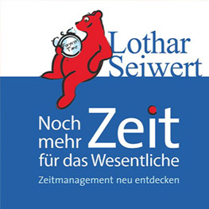
Noch mehr Zeit für das Wesentliche
Lothar Seiwert, Mosaik bei GOLDMANN Prof. Dr. Lothar Seiwert ist ein Zeitmanagement-Guru und verspricht mit seinen Tipps Zeit für das Wesentliche zu gewinnen. Mit seinen Tipps kann man Zeitmanagement ganz neu entdecken. Sein Buch …

Räum dein Leben auf! 100% mehr Lebensfreude
Matt Galan Abend, vianova Verlag Matt Galan Abend holt zu einem positiven Aufräum-Rundumschlag aus, der sich leicht wegliest. Die von ihm entwickelten Methoden sich von Ballast zu trennen sind absolut alltagstauglich für Job und …
Weg damit! Büro ohne Ballast, Entrümpeln Sie Ihren Arbeitsplatz
Rita Pohle, Mosaik bei GOLDMANN Dieses Buch setzt an der Wurzel des Problems an und nennt die Dinge beim Namen. Rita Pohle enttabuisiert das alltägliche Chaos, manchmal schlicht Gerümpel, macht sehr überzeugend deutlich, wie …

World Class Processes-Rendite steigern Verbesserungsmanagement
Richard Glahn “In nur fünf Jahren die Rendite von knapp drei Prozent auf einen guten zweistelligen Prozentsatz steigern-Fiktion oder Wirklichkeit? …Mit den Darstellungen in diesem Buch wird die Vorgehensweise für jedes …
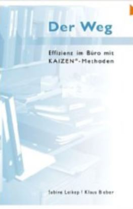
Der Weg – Effizienz im Büro mit Kaizen-Methoden
Sabine Leikep, Klaus Bieber, Effizienz im Büro Sie wollen mehr Effizienz im Büro? Schauen Sie genauer hin: “Papierstapel, Suchzeiten, hohe Durchlaufzeiten, Engpässe…Dies sind die verborgenen Schätze der Verschwendung, welche in …

Perfekt im Office, Moderne Büroorganisation für Profis
Dorothea Engel-Ortlieb, Redline Verlag Aus meiner Sicht für alle die ein Office zu organisieren haben, gleich ob eine Home-Office oder Büro in einem Unternehmen, eine Pflichtlektüre. Frau Ortlieb vermittelt absolut wichtige …
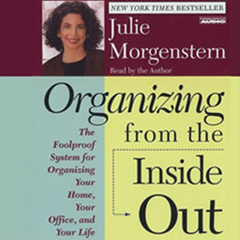
Organizing from Inside out
Julie Morgenstern, HOLT Verlag Das war mein Einstiegsbuch in mein „Professional-Organizer-Leben“. Plötzlich habe ich eigene und fremde Ordnungsblockaden verstanden und nach der Lektüre individuelle und einfache …
Systematisch produktiver und zufriedener
Author: Andrea Kaden / Ralf Westphal Format: Ebook Wie können Sie der täglichen Flut aus kleinen und großen Aufgaben endlich Herr werden? Wie können Sie Ihren Arbeitsergebnissen wieder die Qualität geben, die Sie haben sollen? …
WLAN-Scannen mit Fujitsu ScanSnap iX500
Ein Erfahrungsbericht von Mrs. Paperless Ja, auch ich hatte mir schon lange einen drahtlosen Scanner gewünscht – möglichst als zusammenklappbaren Einzugsscanner für den Schreibtisch. Der Fujitsu ScanSnap iX500 bietet mir genau …
Ein praktisches Geschenk zu Weihnachten
Endlich auf dem Weg in ein papierloses Büro?! Für jeden, der noch immer kein Weihnachtsgeschenk gefunden hat, aber nicht die Parfümerien oder Juweliere aufsuchen möchte – wie wäre es mal mit einem „Büro-geeignetem“ Geschenk? Mich …
Auch Tischler mögen Professional Organizer
Kürzlich konnte ich einer Einladung von Herrn Heinrich Meis, Regionalleiter der CREATIVEn PARTNER nach Ganderkesee, folgen. Dies ist ein Verbund von deutschen Schreinern, Tischlern, Fenster- und Ladenbauern mit mindestens 10 …
Mrs. Paperless befragt US-Experten – Teil 2
Interview mit James Gibson Ermuntert durch meinen angenehmen ersten Gesprächspartner Mark Nye bat ich direkt im Anschluss einen zweiten US-IT-Experten zum Gespräch. Auch hier ein freundlich-erstauntes „Oh, you’re from overseas …
Mrs. Paperless befragt US-Experten – Teil 1
Interview mit Mark Nye Im Nachgang zur BoxWorks 2013 stelle ich hier gerne zwei spannende Interviews vor. Es war mir wichtig, diese mit Entscheidern aus Unternehmen zu führen, denen jeder eine hohe Papierver(sch)wendung zurechnen …
Papierloses Büro – Starten Sie durch
Teil 2 – Damit Ihnen der Start leichter fällt 1. Überflutung = Überforderung = Gelähmtheit Es klingt doch immer wieder großartig: „Egal, welche Information ich benötige, ich finde sie mit wenigen Klicks im Internet. Umso mehr …
Papierloses Büro – Teil 1: innere Hürden überwinden
Papierloses Büro – Innere Hürden überwinden (Inspiration durch Brooks Duncan) In den vergangenen Jahren bin ich vielen Menschen begegnet, die die Idee eines papierlosen Büros nicht nur fasziniert, sondern diese als Erleichterung …
Bericht zur 2. Walzstation – mein Fazit
Für mich war es ein großartiges Erlebnis, aber auch eine Herausforderung, in einer Beta-Unternehmenskultur zu arbeiten. Oftmals war ich diejenige, die sich an diese Kultur gewöhnen musste und nicht die Mitarbeiter an mich als …
Bericht zur 2. Walzstation – allsafe JUNGFALK
Schon während der Vorbereitung auf meine zweite Walzstation wurde mir klar, dass ich diese bei einem sehr besonderen Unternehmen verbringen würde. Wie besonders, dass wurde mir bereits beim Betreten der Firmenzentrale klar. Ein …
Mrs. Paperless auf zur 3. Walzstation!
Nach einer Woche auf dem Land ziehe ich für meine dritte Walzstation nun in die Großstadt. Die Firma Königsdruck in Berlin erwartet mich für die kommende Woche. Ja, Sie haben richtig gelesen – eine Druckerei, obwohl ich ja die …
5S – Auf dem Weg zu mehr Effizienz
Ob kleines oder großes Unternehmen, alle kennen das: Unterlagen, Rechnungen oder andere Gegenstände finden sich auf dem eigenen Schreibtisch, die man längst weggeordnet haben wollte oder die noch nicht einmal zu einem selbst …
Erfolgreich mit 5S – meine Tipps
Meine Tipps für eine erfolgreiche, nachhaltige Anwendung von 5S Weiteres zur 5S-Methodik finden Sie hier!
Mrs. Paperless auf der Walz-weiter geht’s!
Meine erste Walzstation in München liegt erfolgreich hinter mir. Nun packe ich meinen „Walzkoffer“ erneut, denn die nächsten drei Stationen stehen im November an. Nächste Woche darf ich in Engen verbringen, nicht weit vom schönen …
Wieder dahoam – Bericht zur 1. Walzstation
Die erste Walzstation liegt hinter mir – Zeit für einen Bericht Natürlich war ich gespannt, wie sich der erste Tag bei InterNations wohl anfühlen würde, welche Kollegen ich kennenlernen würde und wie überhaupt die Begrüßung …
World Paper Free Day – Wo steht Ihr Unternehmen heute?
Nächste Woche am 24.10. ist es soweit: Der World Paper Free Day, kurz WPFD, findet zum vierten Mal in Folge statt. Vor allem von der US-Papierindustrie wurde dieser Tag anfangs als lächerlich abgetan, sah man doch sein …
Nach dem Global Economic Symposium
Ein ganz persönliches Statement In den letzten Jahren habe ich mich immer wieder mal gefragt „wofür mache ich das eigentlich, dieses Business Tag für Tag?“ Natürlich soll es für meinen Lebensunterhalt sorgen, meine Kunden und …
Mrs. Paperless auf der Walz – es geht los!
Meine Wanderschaft beginnt! Meine Motivation, auf die Walz zu gehen, habe ich ja bereits ausführlich beschrieben. Nach all den Wochen der Vorbereitung kann ich es kaum fassen, dass es morgen mit meiner ersten Walzstation losgehen …
Motivation, auf Walz zu gehen
Meine Motivation, auf die Walz zu gehen Ich plane gerade die Reisen für meine Walz und kann es kaum erwarten, loszufahren. Ich bin voller Vorfreude und sehr gespannt, was mich erwartet, denn: Die Unternehmen, in denen ich Station …
Mrs. Paperless’ Fazit zur BoxWorks
Mein Fazit Zurück aus San Francisco habe ich für mich noch einmal die Tage dort Revue passieren lassen. Nicht nur von den Box-Kollegen habe ich fachlich wichtige Trends mitnehmen können, sondern auch durch die Gespräche mit …
BoxWorks – Der zweite Konferenztag
Anhand meiner Stichpunkte – und das sind sehr viele – folgt hier noch mein Bericht zum zweiten Konferenztag der BoxWorks. Der Tag begann wieder mit einem Highlight: Keynote von Malcolm Gladwell, Bestseller-Autor unter anderem von …
Mrs. Paperless’ private Erkundungstour
Das Fernweh hatte mich schon gepackt, der Flug nach San Francisco war gebucht und das in Kombination mit Meike Winnemuths Buch „Das grosse Los“. Der Keim der Reiselust blühte nach Verschlingen der Lektüre noch mehr auf. Neben …
BoxWorks – Der erste Konferenztag
Viele Eindrücke am ersten Konferenztag Ich hatte mich entschlossen, am ersten Tag aufzufallen, ein bißchen, und daher mein Dirndl zu tragen. Noch immer verbinden viele Amerikaner unser Land mit der Weißwurst- und …
Es geht auch ohne Visitenkarten?!
… aber wie gut? Bereits bei der Opening Reception (ich berichtete bereits) konnte ich erfreut papierlose Abläufe beobachten. Probleme bei der Nachverfolgung von Messekontakten kennt wohl jeder von Ihnen. Statt Haufen von …
Welcome to BoxWorks Mrs. Paperless
Mrs. Paperless beim BoxWorks Empfang Es klang vielversprechend: BoxWorks 2013 is about disrupting business as we know it. But it’s also about having fun. So kick off BoxWorks at the awesome opening reception in the Partner …
Mrs. Paperless is organizing SF – BoxWorks
Why Attend BoxWorks? Diese Frage habe ich mir nach der persönlichen Einladung der Veranstalter, die ich im August erhalten hatte, auch gestellt. Die Gastgeber beantworten dies so: BoxWorks is your chance to catch up on what’s …
WLAN über den Wolken-Produktivtätskatalysator
Grenzenlose Produktivität Ob die scheinbar grenzenlose Kommunikationsmöglichkeit über den Wolken wohl zur gefühlten Freiheit gehört, die schon Reinhard May besungen hat? Im Flugzeug zwischen London und Dallas wundere ich mich …
Professional Organizer auf der Walz – 4 Zusagen
Vier Firmen sind dabei Die Reaktion auf meinen Blogartikel, in dem ich meine Walz ausgeschrieben hatte, war zunächst etwas verhalten und ich war etwas enttäuscht, hatte ich mir doch mehr erhofft. Im Sinne eines gut organisierten …
Mrs. Paperless is organizing San Francisco
Meine Reise beginnt Gestern noch hatte ich mir vorgestellt, mal eben schnell meinen Koffer zu packen…aber so einfach sollten mir meine tausend Gedanken das nicht machen. Besonders wir Frauen kennen das: Wieviele Paar Schuhe …
Professional Organizer auf der Walz
Erfahrungen aus erster Hand sammeln Voneinander lernen – das wurde früher groß geschrieben. Deshalb sind Handwerksgesellen von Betrieb zu Betrieb gezogen. Sie waren auf der Walz, um unterschiedliche Herangehensweisen an ihr …
Effizientes Bewerbermanagement
Effizientes Bewerbermanagement für mittelständische Unternehmen leicht gemacht Die Optimierung von Prozessen in allen administrativen Bereichen eines Unternehmens ist neben dem Arbeitsplatzcoaching und dem leidenschaftlichen …

Produktivitätstipps als eBook
Produktivitätstipps als eBook Einige Tipps für mehr Produktivität und Zufriedenheit hat Gastautor Ralf Westphal in diesem Blog vorgestellt. Und ich habe in seinem Blog etwas dazu geschrieben, wie Sie Veränderungen in Ihrer …
Ordnung auf dem Schreibtisch mit leistungsfähiger Software
Ein aufgeräumter Schreibtisch – der Schlüssel zum Zeitgewinn Brauchen Sie mehr Zeit zum Aufräumen, Sortieren, Suchen und Finden als Sie für Ihre eigentliche Arbeit aufwenden? Ärgern Sie sich immer wieder, wie schnell Ihnen die …
Tipps für mehr Produktivität und Zufriedenheit – Teil 5
Tipps für mehr Produktivität und Zufriedenheit – Teil 5 In den Tipps für mehr Produktivität und Zufriedenheit #4 habe ich Ihnen gezeigt, wie Sie mit der Tomaten-Methode Ihren Arbeitstag in Konzentrationshappen von 25 Minuten …

Tipps für mehr Produktivität und Zufriedenheit – Teil 4
Tipps für mehr Produktivität und Zufriedenheit – Teil 4 Entstören Sie Ihre Arbeit, indem Sie mit Unterbrechungen bewusster umgehen. Die lassen sich nicht vermeiden, also nehmen Sie sie vorweg. Unterbrechen Sie sich selbst …
Elektronische Rechnungen – 10 Regeln
Elektronische Rechnungen – 10 Regeln Beim elektronischen Rechnungsaustausch ist es seit dem 1. Juli 2011 freigestellt, auf welche Art und Weise eine Rechnung übermittelt wird. Das Steuervereinfachungsgesetz schreibt die …
Mit FreeMind wird Mindmapping papierlos
Mit FreeMind wird Mindmapping papierlos Bestimmt haben Sie schon mal von der Mindmapping-Methode gehört und vielleicht auch schon die eine oder andere baumartige „Gedächtniskarte“ gesehen: In der Mitte der Mindmap steht das …

Ordnung auf Laufwerken-praktische Umsetzung
In vielen Unternehmen, egal welcher Größe, klagen die Mitarbeiter darüber, dass sie Ordnung auf Laufwerken vermissen, Chaos herrscht, sie ewig suchen müssen, bis sie die gesuchten Informationen finden, selten sicher sind, dass es …
Sinnvolle und einheitliche Dateibenennung
Sinnvolle und einheitliche Dateibenennung Zur Basis von modernem Wissensmanagement gehört neben einer logischen Ordnerstruktur auch eine sinnvolle und einheitliche Dateibenennung. Mich erstaunt es vor Ort immer wieder, dass in …

Tipps für mehr Produktivität und Zufriedenheit – Teil 3
Tipps für mehr Produktivität und Zufriedenheit – Teil 3 Wenn Sie meinem vorangegangenen Tipp folgen, dann bemühen Sie sich, Ihre Aufgaben fertigzustellen, sobald Sie sie angefangen haben. Sie versuchen der Versuchung zu …
Tipps für mehr Produktivität und Zufriedenheit – Teil 2
Tipps für mehr Produktivität und Zufriedenheit – Teil 2 Mein erster Produktivitätstipp für Sie lautete, Sie sollten sich minimal systematisieren, indem Sie rauskommen aus dem ewigen nur Wegschaffen von Aufgabenbergen …
Tipps für mehr Produktivität und Zufriedenheit – Teil 1
Wenn Ihnen die Arbeit über den Kopf wächst, wenn Sie Aufgaben nur noch husch-husch und unterhalb Ihres Qualitätsanspruchs erledigen, wenn Sie wichtige, ja, strategische Dinge immer wieder aufschieben… dann geht es Ihnen wie …
Ordnerstruktur und Aktenplan
Auch wenn die digitale Ablage auf einem Serverlaufwerk kein Zukunftsmodell für digitale Zusammenarbeit ist, kann es dennoch Sinn machen, noch Zeit in die Optimierung der Ordner- und Laufwerkstruktur zu investieren. Es kann …
Wissensmanagement statt Chaos auf Laufwerken und Servern
Informationsbeschaffung war gestern. Heute ist die Fähigkeit, Wissen zu managen eine der wichtigsten Kernkompetenzen. Zum Managen gehört neben dem Beschaffen und Nutzen von Informationen, die Aufarbeitung, Strukturierung …
Papierloses Projektmanagement
Projektmanagement aus dem Hause Facebook Facebook und Twitter sind aus dem Privatleben nicht mehr wegzudenken, nun halten aus Social Networks bekannte Funktionen und Eigenschaften Einzug in die Geschäftswelt und erleichtern ein …
Body Doubling – Erfolgserlebnis garantiert
Gleich die erste Session, hier auf der NAPO (Konferenz der National Association for Professional Organizers) in Baltimore hat mir neuen, spannenenden Input geliefert. Eine Arbeitsweise, die ich schon manches Mal als sehr …
Tipps und Tricks zum QR-Code
Tipps und Tricks zum QR-Code – So lesen Sie einen QR-Code Smartphones und Tablet-PCs mit Kamera können QR-Codes einfach entziffern, sofern die entsprechende App installiert ist. Diese Auslese-Apps für Barcodes stellen Marktplätze …
QR-Code: Die Brücke zwischen Print und Digital
Auf Werbeplakaten, Messeausweisen oder auf Visitenkarten: Immer häufiger fallen einem kleine Quadrate aus schwarzen und weißen, manchmal auch farbigen Pixeln ins Auge, QR-Code heißen die Pixelquadrate. Hinter diesen wirr …
Ordnerregister sparen Zeit
Ordnerregister sparen Zeit und sorgen für schnellen Überblick – Ordner in Büros haben verschiedene Funktionen. Zum einen dienen sie im sogenannten dynamischen Bereich des Büros – meist in der Nähe des Schreibtisches- als …
Ordner und Ordnerbeschriftung
Auch wenn die Tendenz in vielen Büros in Richtung Papierreduktion geht, gibt es in vielen Büros und Homeoffices noch Ordner. Um effizient damit arbeiten zu können und gleichzeitig für ein professionelles Äußeres zu sorgen, gibt …
Aufräumen ist Denksport
Lust und Last des Aufräumens Es ist ein Phänomen: obwohl die meisten Menschen wissen, wie befreit und erleichtert sie sich nach einer Aufräumaktion fühlen, schieben sie das Aufräumen vor sich her, ganz egal, ob es sich um’s Büro …
Tipps zur Papierreduktion – Teil 2
Auf dem Weg zu papierlosen Büro müssen Sie sich auch fragen: wie entstehen die Papierberge oder die Zettelwirtschaft? Mit der Papierflut, die von außen auf uns einströmt, haben wir uns schon beschäftigt. Ehrlicherweise muss man …

Dauerhaft gut organisiert -Schritte 6-10
6. Entscheiden Sie jetzt! Der meiste Office-„Müll“ ist schlicht und einfach Resultat von Entscheidungsvermeidung. Entscheiden Sie jetzt, wo die Unterlagen hingehören, damit Sie dauerhaft gut organisiert sind. Dafür benötigen Sie …
Tipps zur Papierreduktion
Sie wollen Papier reduzieren? Papierloses Büro bedeutet natürlich nicht, dass Sie künftig alles was Sie ins Haus bekommen einscannen sollen. Sondern im ersten Schritt muss man sich überlegen, wie kann man das Papier reduzieren …
Billige Arbeitsmittel sind meist sehr teuer!
An anderer Stelle habe ich es schon kurz erwähnt, an den Arbeitsmitteln im Büro zu sparen, ist der absolut falsche Weg, denn billige Arbeitsmittel sind meist sehr teuer. Ich erinnere mich gut an frühere Zeiten als Angestellte und …
Dauerhaft besser organisiert
Erste Schritte geschafft, aber wie gelingt nachhaltiger Erfolg? Nun haben Sie schon einmal Ihren Schreibtisch leer gemacht. Haben Sie es geschafft, diesen Zustand auch ein paar Tage zu halten? Das ist nicht leicht, weil es in …

Tipps für einen leeren Schreibtisch – Teil 2
Leerer Schreibtisch – mit gutem Gefühl ins Wochenende! Letze Woche gab es an dieser Stelle die Einsteigertipps für einen leeren Schreibtisch. Konnten Sie etwas umsetzen? Wie sieht Ihr Schreibtisch heute aus? Wäre es nicht eine …
Tipps für einen leeren Schreibtisch-Teil 1
Ein leerer Schreibtisch ist der erste Schritt zu mehr Effizienz im Büro und auf dem Weg zum papierlosen Büro. Wer seinen Arbeitsplatz im Griff hat, kann besser im Team arbeiten. Aber wie anfangen? Hier unsere Tipps: 1. Fragen Sie …

Hilfe! Ideen gesucht!
Die meisten meiner Kundengeschichten sind Erfolgsgeschichten, eigentlich alle, bis auf eine……. Die spielt nicht in eine kleinen Dorf in Frankreich, sondern in einem Büro im Norden Deutschlands. Ich bin von einem Unternehmer …
Tipps für dauerhafte Produktivität im Home Office
Sie haben sich auch für ein Home-Office entschieden? Im Prinzip sind Sie zufrieden, aber Sie haben schnell gemerkt, dass es gar nicht so leicht ist, wie gedacht haben. Sicher, zu Hause zu arbeiten hat eine Menge Vorteile. Auf den …
Ich bin Chef-muss ich aufräumen?
Ich bin Chef-muss ich aufräumen? Und wieder kommt eine Befragung von HR-Managern zu dem Ergebnis, dass ein aufgeräumter Schreibtisch bei Mitarbeitern für Vorgesetzte professionell wirkt. Das überrascht nicht wirklich, oder? Chaos …
Büroorganisation-Chaos ist teuer!
Unordnung und Chaos im Büro kosten Zeit, Geld, Nerven und gute Laune! Neulich habe ich einen schönen Spruch gelesen: „Keiner hat Zeit zum Aufräumen, aber alle haben Zeit zum Suchen“. Ja, es begegnet mir oft, dass Menschen mir …

Es grünt so grün……wenn Drucker nicht mehr glüh’n!
Machen Sie mit: endlich Papier sparen Papier sparen ist gar nicht so schwer aber dringend nötig. „SAVE paper, save ink, save money, save the planet“ eine wunderbare Devise! Es gibt viele Gründe für ein papierloses Büro. In den …
ScanSnap oder Schnappi der Allesfresser?
Natürlich braucht man für ein papierloses Büro einen professionellen Scanner. Für kleinere Unternehmen oder Freiberufler wäre aber ein großes Multifunktionsgerät völlig überdimensioniert und viel zu teuer. Insbesondere, da ja …
Kleine Schritte – große Wirkung
Wer sich auf den Weg zum „Papierlosen Büro“ macht, muss wissen, das ist nicht über Nacht zu erreichen. Ein ganz auf Papier ausgerichtetes Büro wird nicht mit nur einer Aktion zum papierlosen Büro. Der Umstieg ist ein großes …
Papierlos werden ist schon schwer-Papierlos bleiben noch viel mehr!
Bevor man sich aber auf den Weg macht, sollte man einiges bedenken. Mit dem Begriff „Papierlos“ ist in der Realität eine erhebliche Reduktion von Papier gemeint. Natürlich könnte man alles einscannen, aber kaum jemand geht davon …
Papierloses Büro – Chance oder Mythos?
Der Begriff „Papierloses Büro“ erregt seit Jahren die Gemüter und die Meinungen darüber gehen weit auseinander. Wenn ich darüber spreche, ernte ich Reaktionen in der großen Bandbreite von begeisterter Zustimmung bis hin zum müden …
Ordnung gelungen – Büro tot?
Ich habe heute eine ganz besondere Form von Ordnung gesehen. Ich war in zwei Beerdigungsinstituten. Stumm hat mir die Ordnung entgegen geschrien: „Hier ist Stillstand, Ende, alles grau.“ Ich hatte das Bild von Munch im Kopf. Ja …
Ordnung ist das halbe Leben?!
Ist Ordnung das halbe Leben oder gar das ganze? Ist Ordnung langweilig, spießig vielleicht sogar cool und sexy? Warum atmen viele Menschen schwer, wenn sie das Wort Ordnung hören? Was bedeutet Ordnung für mich privat und in …
Keine Artikel gefunden.